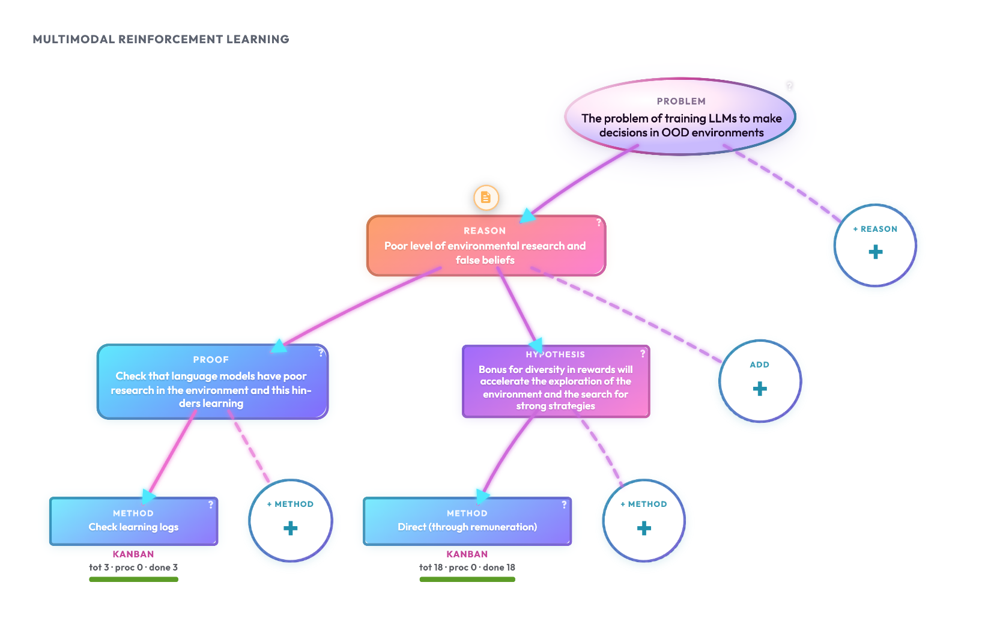

Исследовательское дерево
Постановка исследования на карте мыслей: от наблюдаемой проблемы к причинам, способам проверки и методам. Узлы хранятся в project.md; локальный ResearcherOS рисует дерево на холсте и записывает правки обратно в тот же файл.

Как работает
Дерево отвечает на цепочку: что ломается → почему так думаем → чем это проверить или чем чинить → каким протоколом это сделать. Каждый узел — один шаг этой цепочки; рёбра задают, какие типы детей допустимы у родителя.
Допустимые рёбра (родитель → дети):
| Родитель | Дети |
|---|---|
| (корень) | проблема |
| проблема | причина |
| причина | доказательство причины, гипотеза устранения |
| доказательство / гипотеза устранения | метод |
| метод | — (прогоны только в канбане метода) |
В файле типы называются problem, cause, cause_evidence, remediation, method. На карте мыслей чипы типа узла всегда короткие: «Проблема», «Причина», «Доказательство», «Гипотеза», «Метод», «Эксперимент». В выпадающем списке типа при добавлении ребёнка, когда метаданные типов узлов загружены, для доказательства и гипотезы устранения показываются более длинные подписи API: «Доказательство причины», «Гипотеза устранения». Подпись «Гипотеза» на карте относится к типу remediation (гипотеза устранения), а не к вердикту причины.
Тип experiment устарел: парсер его ещё читает, на карте лист не показывают, через UI добавить нельзя. Прогоны живут на доске метода.
У причины есть вердикт: открыта, подтверждена или опровергнута (open / supported / refuted). Значки на карте только у причины: ✔ «Гипотеза подтверждена» / ✗ «Гипотеза опровергнута»; при open значка нет.
Метод владеет канбаном. Клик по методу открывает доску, а не карточку узла как у проблемы. Под узлом метода на карте — полоска статуса доски.
Рамка постановки — проверка гипотез: формулировка должна допускать опровержение. Успешный прогон не «доказывает навсегда»; неожиданный результат разбирают (гипотеза, допущения, измерение, сам эксперимент).
Как человек работает в интерфейсе
Пользователь выбирает проект в списке слева (лаборатория / проекты). ResearcherOS загружает дерево на холст карты мыслей. Дальше типичный ход: открыть узел, изменить текст, сохранить — статус «Сохранение…», затем «Сохранено в project.md». После сохранения следующий шаг — открыть канбан метода (карточки и прогоны на доске). Разбор отчёта (report_ingest) обновляет вердикт причины, если отчёт явно его заявляет.
Жесты по узлам разведены специально:
| Действие | Не-метод | Метод |
|---|---|---|
| Клик | модалка узла | канбан |
| Двойной клик | модалка узла (как клик) | камера к узлу, не канбан |
| Контекстное меню | модалка узла (как клик) | канбан |
В модалке не-метода правят заголовок и описание (и связанные поля узла). У доказательства или гипотезы устранения есть «+ Добавить метод». Круглая «+» на карте появляется у типов узлов, у которых могут быть дети (в том числе у родителя, у которого детей ещё нет); модалки добавления: «Добавить причину», «Добавить доказательство или гипотезу», «Добавить метод». Корневую проблему удалить нельзя: кнопка скрыта, сервер отвечает «Cannot delete problem node». У остальных узлов — подтверждение с вводом первых одного-двух слов заголовка узла; при несовпадении — «Введите фразу точно, как показано выше».
Масштаб холста: «+» («Приблизить»), «−» («Отдалить»), «◇» («Вся лаборатория»), «▣» («Текущий проект»). Перетаскивание холста — панорамирование. Справка по типам — оверлей «?».
В Hub дерево только для чтения: «В Hub нельзя добавлять узлы — только просмотр»; в шапке — «Hub · @{owner} · только просмотр».
Вердикт в модалке узла не выставляют (см. ограничения и API ниже).
Какие сценарии агента подключаются
Сценарии агента необязательны: дерево можно править в интерфейсе или в Markdown. Они нужны, чтобы скелет и формулировки не разъезжались между людьми и агентами.
| Сценарий агента | Роль относительно дерева |
|---|---|
koi-project-onboard |
Собирает скелет: проблема → причина → доказательство / гипотеза устранения → метод. Пишет tree/<repo>/koi-structure/project.md и onboard-brief.md, затем install_cli. |
koi-prose-style |
Заголовки и описания узлов — естественный язык, короткий title, без AI-штампов. Онбординг гоняет проверку стиля до PASS перед записью. |
koi-grill-experiment |
Не строит дерево целиком; дожимает постановку эксперимента у выбранного метода (карточка канбана). Читает project.md, чтобы не спрашивать то, что уже в узлах. |
koi-done-research |
После колонки «готово»: вопрос / ответ и рассказ в research.json через research_questions. Вердикт причины не выставляет. |
koi-knowledge-curator |
Курирует knowledge/ с опорой на дерево; по контракту само дерево не переписывает. |
Разбор отчёта (report_ingest, koi/projects/report_ingest/workflow.py) обновляет вердикт причины, если отчёт явно его заявляет — это отдельный поток, не сценарий done-research.
Как устроено технически
Хранение
Канон: tree/<repo>/koi-structure/project.md на ветке koi/research в отдельном рабочем дереве Git (worktree). Парсер и сериализатор: koi/core/md_io.py (parse_project_md / serialize_project_md). Загрузка: koi/adapters/repository.py.
Заголовки Markdown задают узлы: уровень # = глубина, в строке заголовка — тип: id.
# problem: n-problem
Заголовок проблемы
Текст описания…
## cause: n-cause-memory
verdict: open
Причина: …
### remediation: n-rem-episodic
Устранение: …
#### method: m-ab-memory
Протокол A/B…
<!-- koi:kanban board-… -->
| backlog | running | done |
…
Модель домена: koi/core/models.py — NodeType, ALLOWED_CHILDREN, Verdict, KANBAN_OWNER_TYPES = {method}. Список допустимых детей для интерфейса: koi/projects/views.py → allowed_children. Короткие подписи типов на карте: TYPE_LABELS в web/app.js.
API
Создание, правка и удаление: POST / PATCH / DELETE /projects/{id}/nodes. Тело UpdateNodeBody принимает title, description, research_questions — поля verdict в PATCH нет. Вердикт меняют правкой project.md (verdict: … у причины) или условно через разбор отчёта (report_ingest).
Тесты бэкенда: test_md_io.py, test_project_views.py, test_project_ops.py, test_report_ingest.py. Отдельных фронтенд-тестов mindmap нет.
Клиент
Холст: web/index.html (#mindmap) + web/app.js (renderMindmap, mountMapNode, openNodeModal, openKanbanModal, flyToMethodNode, nodeDeleteConfirmPhrase) + камера web/lab-canvas.js. Справка: web/node-tree-help.js. HTTP-клиент: web/api.js. Когда в лаборатории загружено несколько проектов, холст лаборатории показывает их сразу.
Раскладка узлов считается на клиенте (порядок и размеры по типу: проблема шире, метод с полоской канбана). Рёбра — SVG между узлами. Значки вердикта: VERDICT_BADGES в web/app.js. Подписи типов в UI: state.meta.labels || TYPE_LABELS (чипы на карте всегда из TYPE_LABELS).
Связь с остальным
- Канбан и отчёты — у метода; устаревшие листья
experimentв дереве не дублируют. research.json— вопросы и выводы поmethod_id/card_id, не внутри заголовков дерева.- Hub отдаёт то же дерево как снимок только для чтения.
Ограничения
- Вердикт причины нельзя выставить через типичную модалку узла или
PATCHузла: только правкаproject.mdили условный разбор отчёта (report_ingest). - Двойной клик по методу приближает камеру и не открывает канбан (канбан — обычный клик или контекстное меню).
- Листья
experimentв дереве — наследие: читаются, на карте скрыты, через UI не добавляются. - Hub — только просмотр; добавлять и удалять узлы нельзя.
- Корневую проблему удалить нельзя.
Связанные страницы
Текст: content/research-tree.md. Медиа: media/research-tree-hero.*.